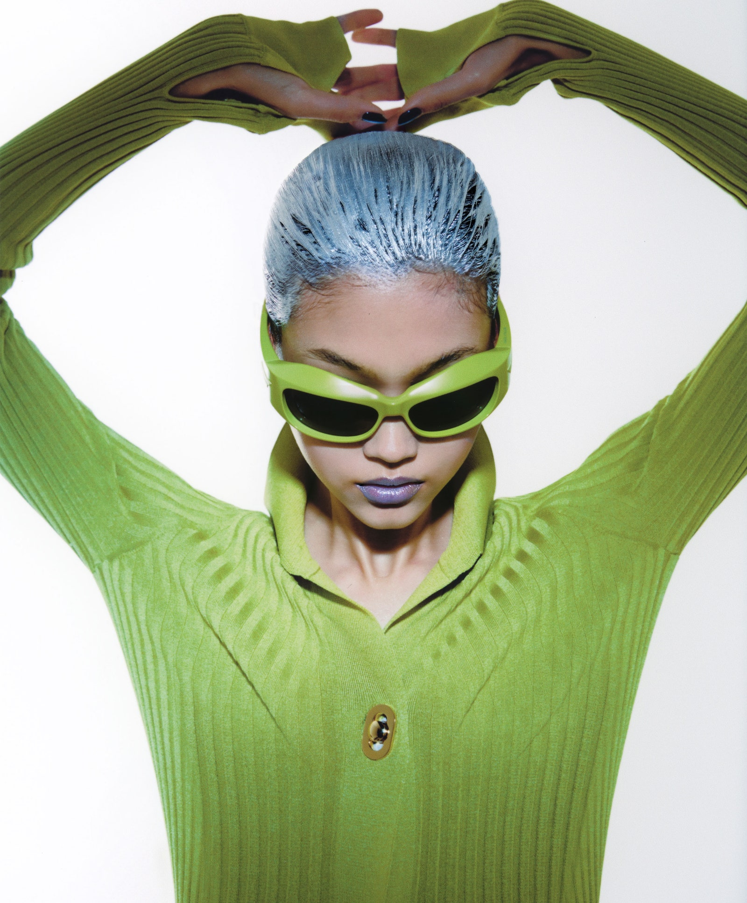

Byredo debuts a wild, color-satureated makeup collection with some help from Isamaya Ffrench
By Harriet Fitch Little
September 1, 2020
Byredo’s Ben Gorham held his first meetings with the trailblazing makeup artist Isamaya Ffrench as only very busy people would think to: sitting in traffic, stuck between shows during Paris Fashion Week in 2017. Three years later, they’re putting the finishing touches on the resulting collaboration, Byredo Makeup, at a moment when such hectic schedules have ground to a halt. When we speak in early June, Ffrench is stuck at home in East London, and Gorham is working from Byredo’s studio in Stockholm. On a video call, Gorham points out the window to his nearby apartment and his daughter’s day care. “It’s the first time I’ve been in one place for this long in 15 years,” he says.
Although Byredo’s inaugural makeup line won’t be released until October, you may have a hunch about its aesthetics. The cult brand’s pharmaceutical-chic fragrance bottles and candles have become signifiers of stripped-back Scandinavian good taste. But Byredo Makeup turns out to be a far cry from what most fans will have anticipated. Gorham is banging the drum for makeup as a creative, colorful free-for-all. At the core of the first drop are 16 color sticks in shades ranging from swampy green to ’70s orange, which are intended for use anywhere and anyhow. There are also a liquid liner, mascara, and lipstick in 15 shades, all elevated by their sculptural packaging. The swooped red mascara tube wouldn’t look out of place on the mantel of a 1980s Memphis-style home. Now that Byredo’s minimalism has been absorbed (read: copied) by the mainstream, Gorham is betting on ultra-expressiveness as the future of beauty.
“VISION OF BEAUTY”
Gorham says one of the reasons he took his time getting into makeup was his distaste for the industry’s uniform vision of beauty. “It was almost sold as, like, Spanx. ‘Do this and look like this,’” he explains. A former beauty director for Dazed and i-D, Ffrench was known for her work with prosthetics and an obsession with decay that put her at odds with a wellness-obsessed industry. Under her watch at Dazed, Kylie Jenner was painted with AI-generated makeup that made her face appear to be melting. “Here was a person who also spent a lot of time trying to not be defined by one thing,” Gorham remembers thinking.
When I speak to Ffrench, she talks me through how she translated Gorham’s vision into “really fucking good products” in collaboration with a leading international cosmetics lab. “It’s fully vegan, and we blacklist lots of chemicals,” she says of the line, recalling many trips to the lab to improve small but crucial details like wearability and gloss. The pigmentation in each lipstick was also designed to complement all skin tones, and unsurprisingly, Byredo also paid particular attention to creating subtle fragrances for every product. Ffrench tells me she warned Gorham that her interests lay as much in packaging and image-making as in the products, but Gorham was on board with her vision and proved it by agreeing to debut the collection on social media with a CGI-generated image created by the artist Jesse Kanda. Inspired by the pioneering visuals of Comme des Garçons, whose ads rarely show the brand’s products, Ffrench wanted to create a campaign in which “an image could represent an emotion.”
Along the way, the collaboration has developed into a friendship. During those first snatched conversations in Paris, the two found they had a love of sports in common: Gorham played professional basketball in Europe, and Ffrench was once a semi-competitive diver and dancer. For Gorham, who says that he still sometimes feels like a “jock” despite his many years in the beauty industry, this makes the bond all the more enduring. “We can talk about makeup, and then we can talk about these electric dirt bikes that I want her to come try,” he says. “I can’t imagine anybody better fit.”
- Makeup: Isamaya Ffrench
- Hair: Shiori Takahashi
- Fashion Editor: Imruh Asha
- Art Direction by Lucas Lefler
- Produced by Little Moon Productions